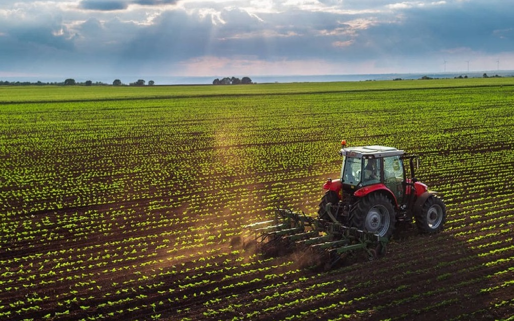

Las condiciones seguirán siendo esta semana desfavorables para los cultivos: con 0% de agua en el suelo en gran parte de la región pampeana, se esperan altas temperaturas y nuevamente lluvias escasas

La primera estimación de área de la oleaginosa es de 16,8 M ha, un 4,3% de incremento respecto del ciclo anterior. Las gramíneas bajan: el maíz podría sufrir una baja interanual de un 5% en su área, mientras que la de trigo se mantiene en 5,9 M ha